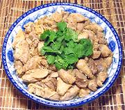

|
Chicken AdoboPhilippine - Adobong Manok | ||||
| Serves: Effort: Sched: DoAhead: |
2 main ** 1 hr Yes |
An interesting stewed chicken dish, very popular in the Philippines. It's mildly tart, as many Philippine dishes are. This recipe, with rice, will serve two good eaters, or four Asian style with other dishes. | |||
|
|
1-1/2 ------ 3 1 1/4 3/4 1 1/4 2 ------ 1 |
# --- cl c c t t --- T |
Chicken Meat (1) -- Broth Garlic Chili Serrano Vinegar (2) Water Salt Pepper, black Bay Leaf ---------- Oil |
A common variation is to add 1/2 cup of coconut milk for the last 5 minutes. Prep - (15 min)
|